Trigonometri
Du skal ha kompetanse om
- grunnleggende geometri
- grunnleggende trigonometri
- definisjonene av sinus, cosinus og tangens fra trekanter
- definisjonene av sinus og cosinus fra enhetssirkelen
- de omvendte funksjonene til sinus, cosinus og tangens
- trigonometriske formler
- arealsetningen
- sinussetningen
- cosinussetningen
Grunnleggende geometri
Grunnleggende formler
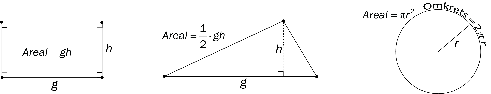
Formlikhet
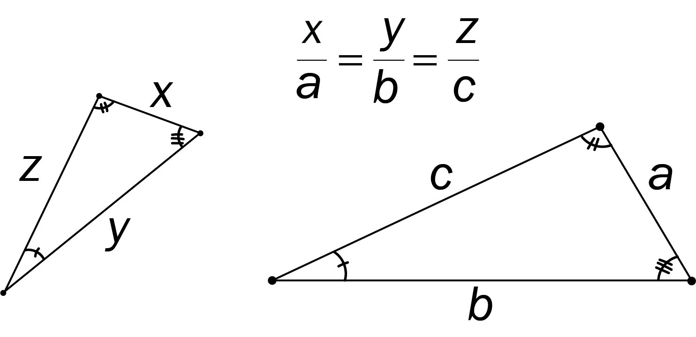
Eksempel
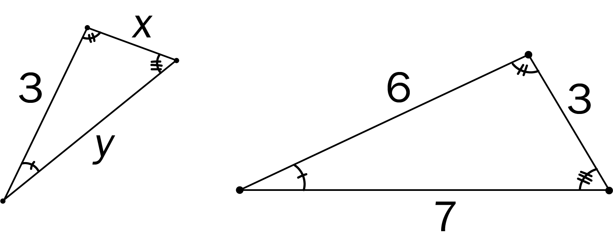
Bestem \(x\) og \(y\).
$$
\begin{align}
\frac{x}{3} &= \frac{3}{6} \;\;\; \rightarrow \;\;\; x = \frac{3 \cdot 3}{6} =\frac{3}{2} \\
\frac{y}{7} &= \frac{3}{6} \;\;\; \rightarrow \;\;\; y = \frac{7\cdot 3}{6} =\frac{7}{2}
\end{align}
$$
Merk: Når vi jobber med geometri får vi ofte likninger med brøk på begge sider. Det er da nyttig med et lite algebratriks;
kryssmultiplikasjon:
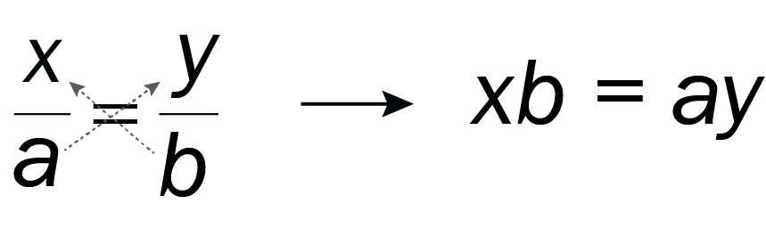
Eksempel
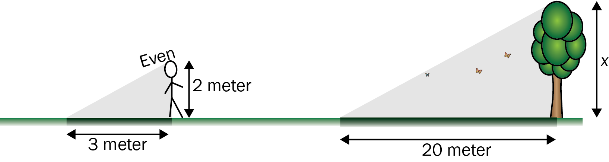
Hvor høyt er treet?
\[ \frac{x}{20} = \frac{2}{3} \;\;\; \rightarrow \;\;\; x = \frac{2 \cdot 20}{3} = \frac{40}{3} \approx 13 \text{ meter} \]
Pytagoras
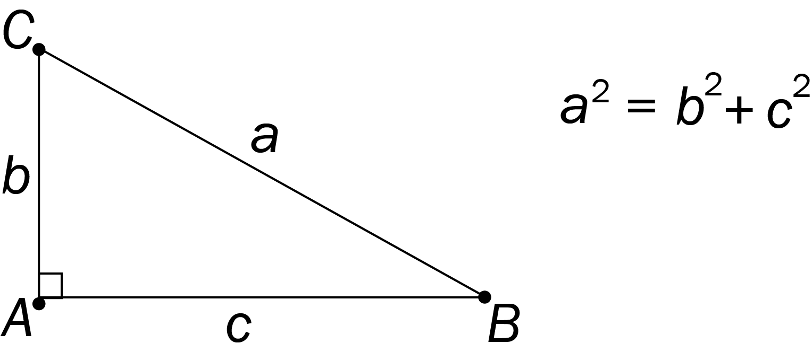
Merk: Vi bruker små bokstaver for å navnsette sidekantene, og store bokstaver for å navnsette punktene i hjørnene.
Navnet på en sidekant er samme bokstav som navnet på hjørnet på motsatt side. Dette er viktig når vi skal jobbe med mer avanserte formler!!!
Eksempel
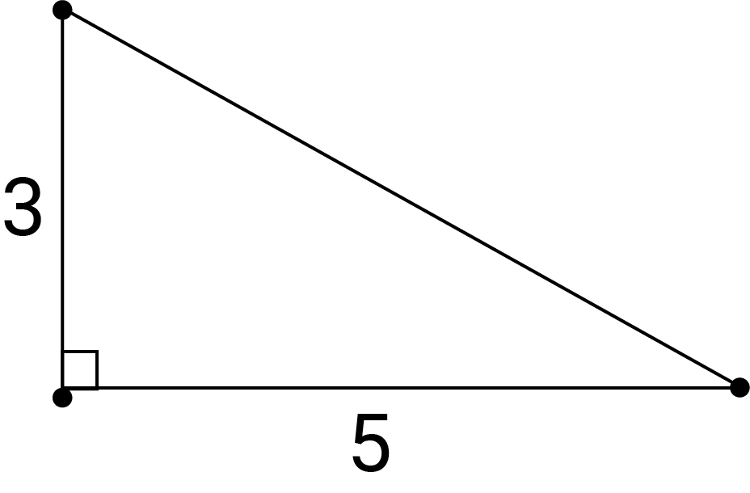
Bestem lengden av hypotenusen.
$$
\begin{align}
x^2 &= 5^2 + 3^2 \\
x^2 &= 25 + 9 \\
x &= \sqrt{25 + 9} \\
x &= \sqrt{34}
\end{align}
$$
Eksempel
En trekant har vinkler \(30^{\text{o}}\), \(60^{\text{o}}\) og \(90^{\text{o}}\). Hypotenusen har lengde 2.Bestem lengdene av katetene.
Vi deler en likesidet trekant med sidekanter 2, i to deler
Pytagoras gir lengden av den andre kateten: $$ \begin{align} x^2 + 1^2 &= 2^2 \\ x^2 &= 4 - 1 \\ x &= \sqrt{3} \end{align} $$
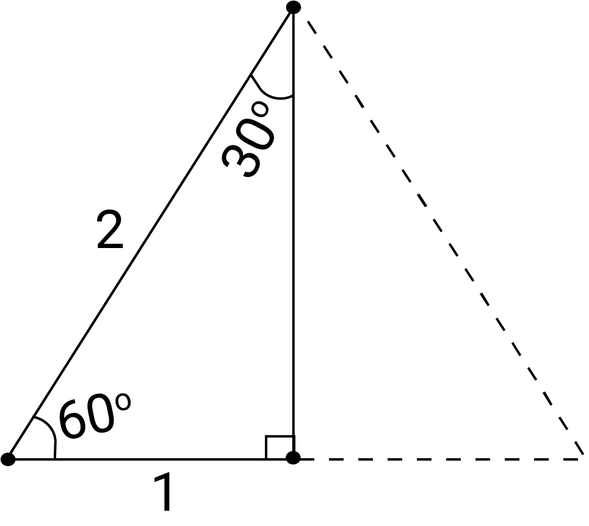
Symmetri gir at den ene kateten har lengde \(1\).Pytagoras gir lengden av den andre kateten: $$ \begin{align} x^2 + 1^2 &= 2^2 \\ x^2 &= 4 - 1 \\ x &= \sqrt{3} \end{align} $$
Merk: På den type abstrakte/teoretiske oppgaver som over, er det meningen å svare eksakt; Ikke regne ut ca.-verdi med desimaltall, behold heller kvadratrota.
På mer praktiske oppgaver er det meningen å svare med en tilnærmingsverdi (avrudning og/eller desimaltall).
Eksempel
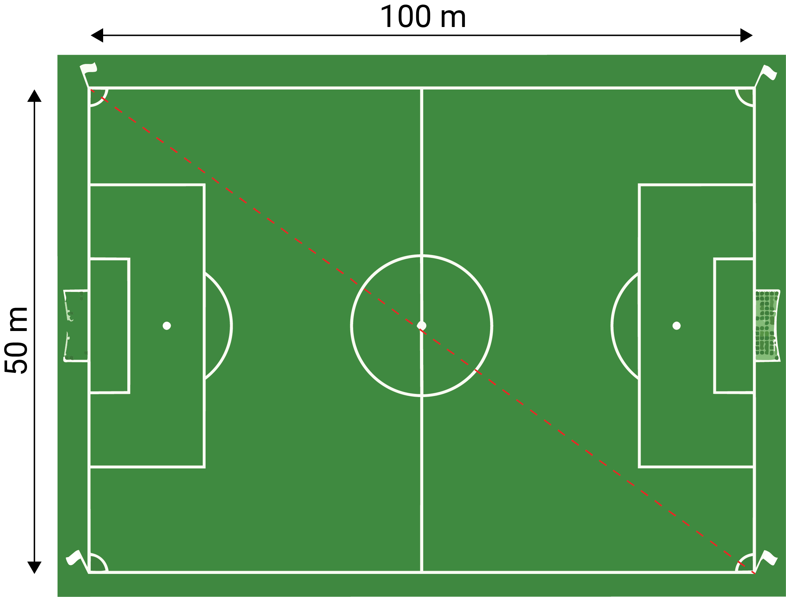
Hvor lang er diagonalen til fotballbanen?
$$
\begin{align}
x^2 &= 50^2 + 100^2 \\
x^2 &=2500 + 10000 \\
x^2 &= 12500 \\
x &= \sqrt{12500} = 10\sqrt{125} \approx 10\sqrt{121} = 10 \cdot 11 = 110
\end{align}
$$
Diagonalen er omtrent 110 meter.
Eksempel
 Bestem hvor høyt \(x\) over det laveste punktet i banen jenta er.
Bestem hvor høyt \(x\) over det laveste punktet i banen jenta er.
$$
\begin{align}
5^2 &= \left( 5 - x \right)^2 + 3^2 \\
25 - 9 &=\left( 5 - x \right)^2 \\
16 &=\left( 5 - x \right)^2 \\
4 &=\left( 5 - x \right) \\
x &= 5 - 4 \\
x &= 1
\end{align}
$$
Hun er altså 1 meter over det laveste punktet.
Grunnleggende trigonometri
Definisjon av sinus, cosinus og tangens fra trekanter
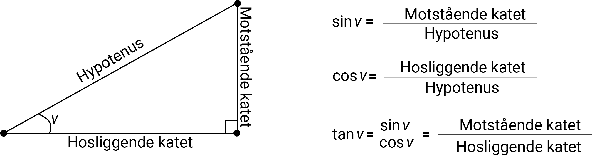
Eksempel
Bestem sinus, cosinus og tangensverdiene til \(30^{\text{o}}\) og \(60^{\text{o}}\).
Vi deler en likesidet trekant med sidekanter 2 slik:
Pytagoras gir at høyden er \(\sqrt{3}\).
Definisjonene av sinus, cosinus og tangens gir da
Definisjonene av sinus, cosinus og tangens gir da
| \(\sin 30^{\text{o}} = \frac{1}{2}\) | \(\cos 30^{\text{o}} = \frac{\sqrt{3}}{2}\) | \(\tan 30^{\text{o}} = \frac{1}{\sqrt{3}}\) |
| \(\sin 60^{\text{o}} = \frac{\sqrt{3}}{2}\) | \(\cos 60^{\text{o}} = \frac{1}{2}\) | \(\tan 60^{\text{o}} = \frac{\sqrt{3}}{1} = \sqrt{3}\) |
Merk: Sinus-, cosinus- og tangensverdier er et forholdstall; De sier ikke noe om lengdene av sidekantene alene,
de sier bare hvor lange sidekantene er i forhold til hverandre. Verdiene er uavhengig av størrelsen på trekanten; F.eks. er \(\sin 30^{\text{o}} = \frac{1}{2}\) i alle trekanter,
uavhengig av størrelsen på trekanten.
Eksempel
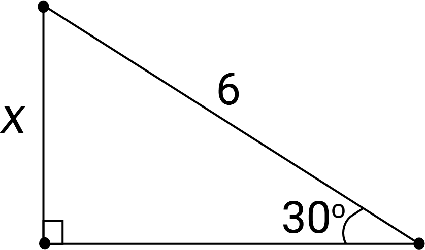
Bestem \(x\).
$$
\begin{align}
\sin 30^{\text{o}} &= \frac{x}{6} \\
\frac{1}{2} &= \frac{x}{6} \\
x &= 3
\end{align}
$$
Eksempel
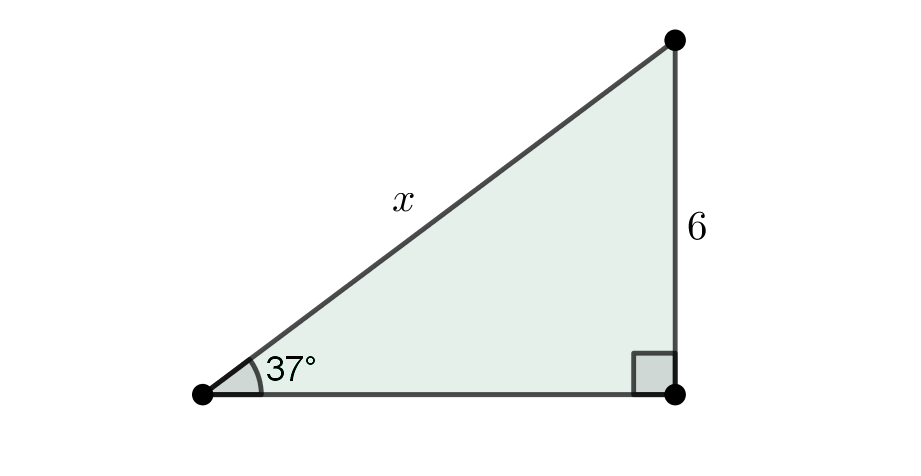
Bestem \(x\).
Vi regner ut \(\sin 37^{\text{o}} \approx 0\text{,60}\) på kalkulator.
$$
\begin{align}
\sin 37^{\text{o}} &= \frac{6}{x} \\
0\text{,}60 &= \frac{6}{x} \\
x &= \frac{6}{0\text{,}60} \\
x &= 10
\end{align}
$$
Definisjon av sinus og cosinus fra enhetssirkelen
Vi kan definere sinus og cosinus fra enhetssirkelen; En sirkel med radius 1, og sentrum i origo.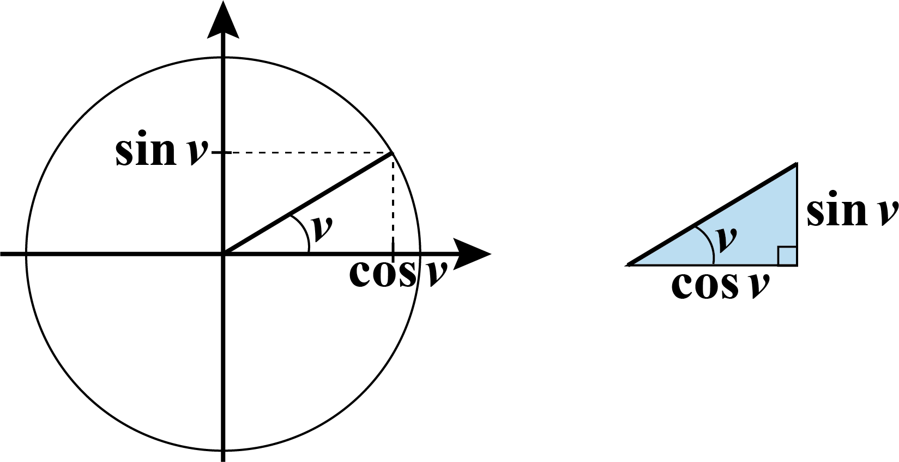
Vi tegner en vinkel opp fra \(x\)-aksen, mot klokka. Sinusverdien til vinkelen er høyden, altså \(y\)-verdien på enhetssirkelen, og cosinusverdien er \(x\)-verdien på enhetssirkelen.Eksempel
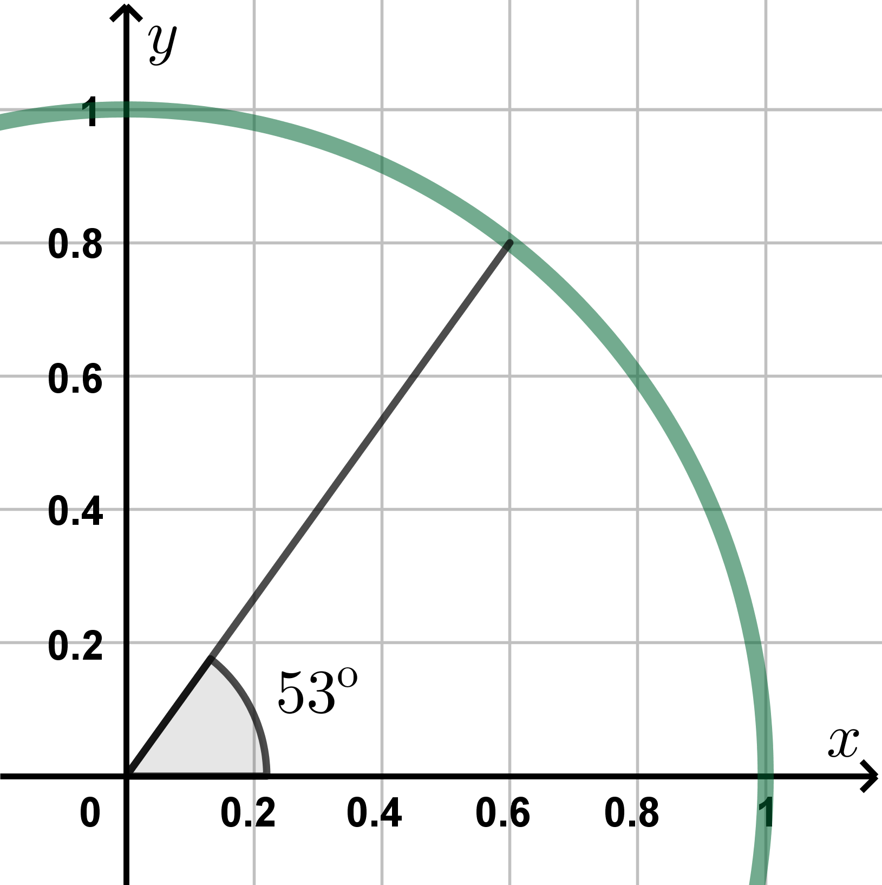
Bestem \(\sin 53^{\text{o}} \), \(\sin 127^{\text{o}} \) og \(\cos 127^{\text{o}} \).
Fra figuren i oppgaveteksten ser vi at \(\sin 53^{\text{o}} = 0\text{,}80\).
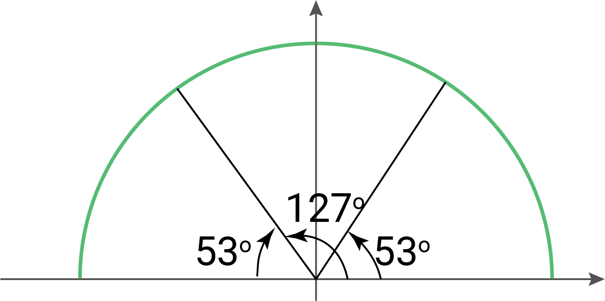
Fra figuren over ser vi at \(\sin 127^{\text{o}} = 0\text{,}80\) og at \(\cos 127^{\text{o}} = -0\text{,}60\).De omvendte funksjonene til sinus, cosinus og tangens
Ved å bruke de omvendte (inverse) funksjonene til sinus, cosinus og tangens kan vi bestemme vinkler i rettvinklede trekanter når lengden av sidekantene er kjente.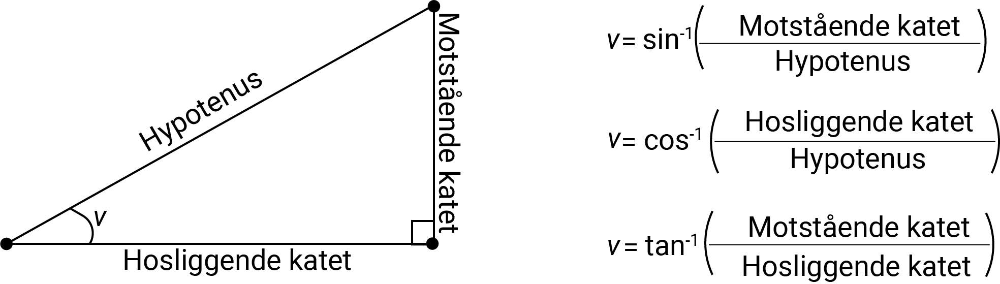
Eksempel
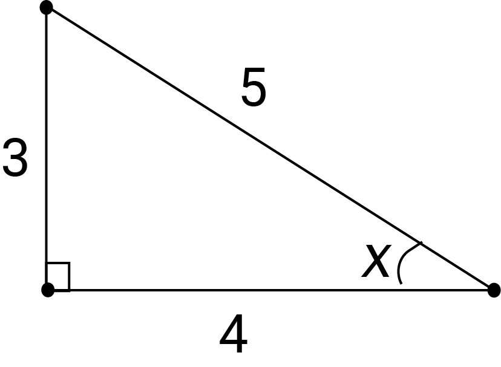
Bestem \(x\) på tre ulike måter.
Ved hjelp av kalkulator får vi
$$
\begin{align}
x = \sin^{-1} \left( \frac{3}{5} \right) \approx 37^{\text{o}}\;\;,\;\;
x = \cos^{-1} \left( \frac{4}{5} \right) \approx 37^{\text{o}}\;\;,\;\;
x = \tan^{-1} \left( \frac{3}{4} \right) \approx 37^{\text{o}}
\end{align}
$$
Trigonometriske formler
Arealsetningen
Fra arealformelen for en trekant og definisjonen av sinus, kan vi utlede følgende formel for areal: \[\text{Areal} = \frac{1}{2} gh = \frac{1}{2} b \cdot c \cdot \sin \angle A\]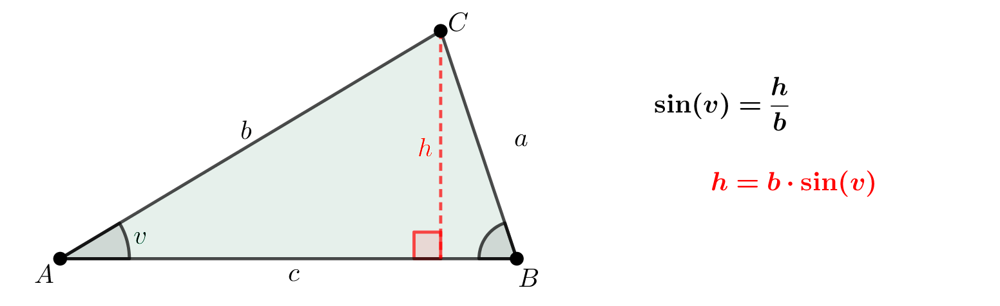
Merk: Det er egentlig tre "utgaver" av arealsetningen;
\[ \text{Areal} = \frac{1}{2} b \cdot c \cdot \sin \angle A = \frac{1}{2} a \cdot b \cdot \sin \angle B = \frac{1}{2} a \cdot b \cdot \sin \angle C \]
eller mer generelt
\[ \text{Areal} = \frac{1}{2} \cdot \text{sidekant} \cdot \text{sidekant} \cdot \sin (\text{vinkel mellom sidekantene}) \]
Eksempel
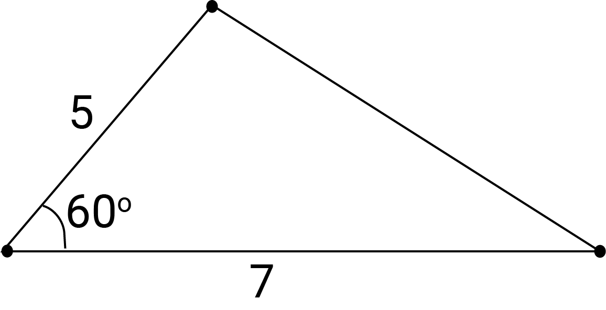
Bestem arealet.
\[
\text{Areal} = \frac{1}{2} \cdot 5 \cdot 7 \cdot \sin 60^{\text{o}} = \frac{1}{2} \cdot 35 \cdot \frac{\sqrt{3}}{2} = \frac{35\sqrt{3}}{4} \approx 15
\]
Sinussetningen
Fra arealsetningen er det mulig å utlede følgende sammenheng: \[ \frac{\sin \angle A}{a} = \frac{\sin \angle B}{b} = \frac{\sin \angle C}{c} \]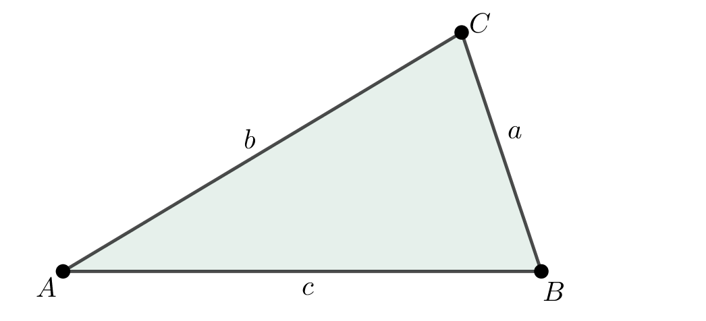
Eksempel
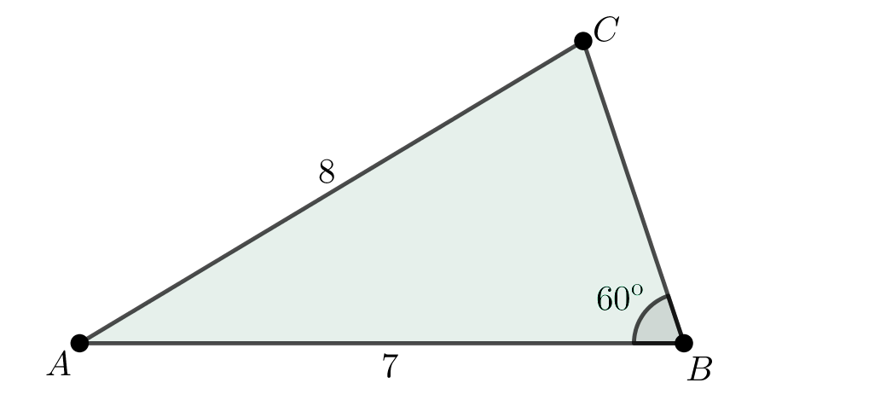
Bestem de ukjente vinklene og den ukjente sidekanten.
\[
\frac{\sin 60^{\text{o}}}{8} = \frac{\sin \angle C}{7} \;\; \xrightarrow{\text{algebrakadabra}} \;\; \angle C = \sin^{-1}\left( \frac{7 \cdot \sin 60^{\text{o}}}{8} \right) \approx 49^{\text{o}}
\]
Siden vinkelsummen er \(180^{\text{o}}\), er \(\angle A \approx 71^{\text{o}}\).
\[ \frac{\sin 71^{\text{o}}}{BC} = \frac{\sin 60^{\text{o}}}{8} \;\; \xrightarrow{\text{algebrakadabra}} \;\; BC = \frac{8 \cdot \sin 71^{\text{o}}}{\sin 60^{\text{o}}} \approx 8\text{,}7\]
\[ \frac{\sin 71^{\text{o}}}{BC} = \frac{\sin 60^{\text{o}}}{8} \;\; \xrightarrow{\text{algebrakadabra}} \;\; BC = \frac{8 \cdot \sin 71^{\text{o}}}{\sin 60^{\text{o}}} \approx 8\text{,}7\]
Cosinussetningen
Ved hjelp av pytagoras og definisjonen av cosinus kan vi utlede følgende sammenheng: \[ a^2 = b^2 + c^2 - 2bc \cos \angle A \]
Merk: Det er egentlig tre "utgaver" av cosinussetningen;
$$
\begin{align}
a^2 &= b^2 + c^2 - 2ac \cos \angle A \\
b^2 &= a^2 + c^2 - 2ac \cos \angle B \\
c^2 &= a^2 + b^2 - 2ab \cos \angle C \\
\end{align}
$$
Legg merke til at vinkelen som brukes er vinkelen ovenfor sidekante på venstre side av likningen.
Eksempel
Bestem lengden av den ukjente sidekanten.
$$
\begin{align}
x^2 &= 7^2 + 5^2 - 2\cdot 7 \cdot 5 \cdot \cos 60^{\text{o}}
= 49 + 25 - 2\cdot 7 \cdot 5 \cdot \frac{1}{2}
= 39 \\
x &= \sqrt{39}
\end{align}
$$